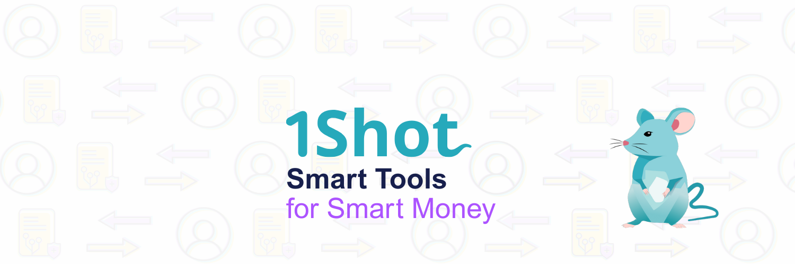
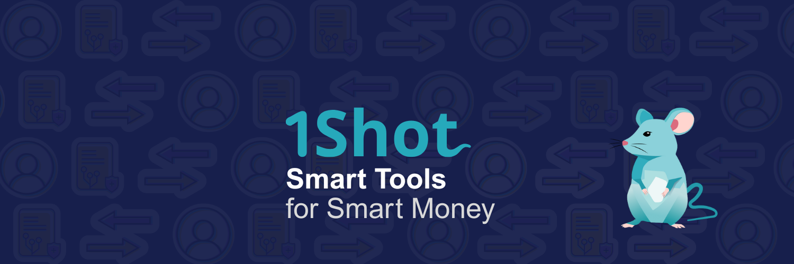
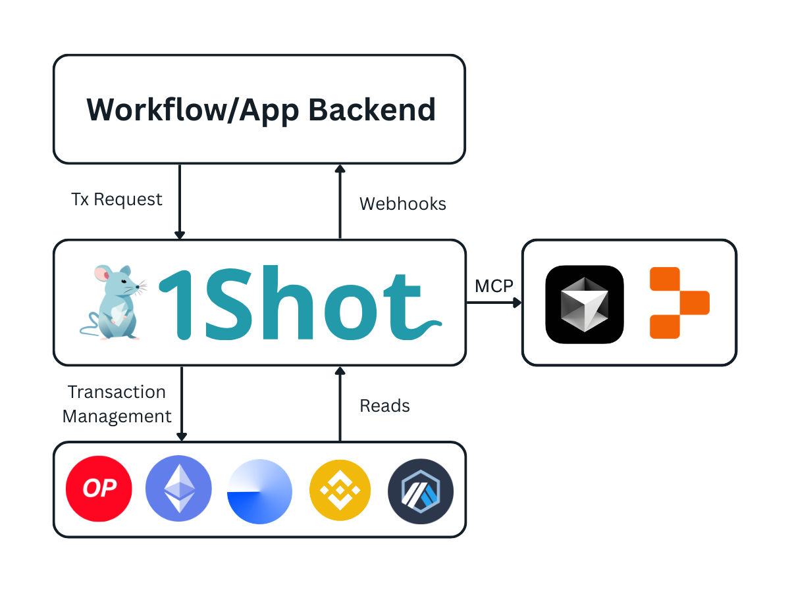
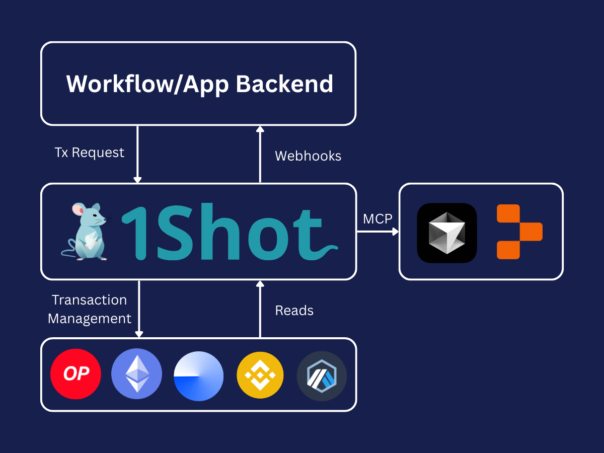

Welcome to 1Shot API#
1Shot API is a full-stack web3 infrastructure platform that lets you bring reliable onchain agents, workflows and products to market fast with account abstraction, server wallets and consumer stablecoin payments. 1Shot API offers MCP capabilities to connect to the most popular agentic coding tools like Cursor or Replit to prompt your way to a production-ready onchain application or agent.
The fastest way to get started is to install the skills library and connect to 1Shot API’s MCP server to your favorite agentic development environment like Cursor or Replit. The coding agent will handle setting up server wallets and importing the necessary smart contract methods into your account.
Getting Started#
Start by creating a free 1Shot API account. Next, explore the paths to get you up and running with the 1Shot API:
Set up businesses, wallets, and import smart contract methods step by step.
Connect 1Shot API to your favorite AI coding environment.
Accept zero-fee consumer payments in your app or agent.
How It Works#


1Shot API is not an RPC provider, it is a programmable transaction relayer service which handles the full transaction lifecycle with real-time webhook callbacks on the final state of your application’s transactions. 1Shot API allows you to read from and write to smart contracts without needing to import web3 clients or smart contract ABIs into your source code. This lets you keep your workflows and application logic simple and focused on your product’s unique value proposition.
The 1Shot API service is designed to handle heavy request traffic. If your product has many users generating onchain actions all at once, 1Shot API ensures all of your transactions will make it to the chain quickly and gas efficiently without flooding the mempool. 1Shot API greatly simplifies the technical overhead of adding digital assets or on-chain logic to any application, bot, or agent, regardless of the language your application is written in. Additionally, with its powerful team & role management features, 1Shot API can scale with your product as your team and user base grows from proof-of-concept to enterprise scale.
Several helpful client SDKs for popular languages like Python, TypeScript are available so you can one shot your next app in no time, leaving the complexities of delegation, transaction batching, submission and monitoring to us.